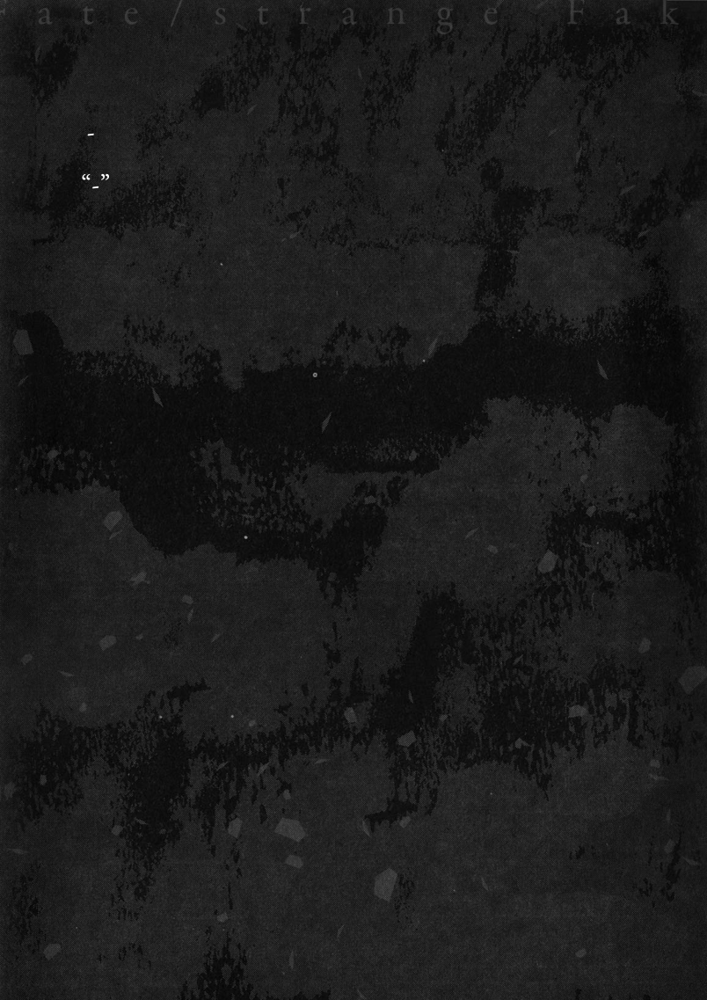

—
"—"
Desista, querida. Aquela criança é demais para nós. Ele não vai fazer a magia da nossa família avançar; vai nos destruir a todos!
Está me dizendo que é isso que ganhamos depois de aguentar o escárnio da Torre do Relógio por quase dois milênios? A Torre do Relógio pode até mudar de ideia, é verdade, mas qualquer um vê que eles vão nos esmagar. Ainda assim, tenho certeza de que aquela criança vai sobreviver. Vai ser o único.
Por que aquela criança sequer nasceu? Será que ele é mesmo nosso...? Não, eu sei. Me desculpe. Você fez tudo o que podia para verificar isso, tanto cientificamente quanto misticamente. Você provou, sem sombra de dúvida, que ele é nosso... Eu sei. Eu sei disso! É que, mesmo assim, eu não consigo acreditar! Eu acharia mais fácil aceitar se você me dissesse que fadas ainda existem e que nós acabamos com um changeling nos braços.
Você sabe, não sabe? Nossa família enfrentou esse problema de pesquisa trezentos anos atrás, julgou-o impossível no fim e o guardou de lado. Aquela criança o completou aos oito anos de idade! Sem verbalização, sem reprodutibilidade; ele simplesmente encontrou o caminho por intuição! ...É, suponho que você tenha razão. Não dá para chamar isso de completo sem reprodutibilidade. Eu sei. Eu sei, querida. Mas, mesmo assim...
Eu estou com medo. Aquela criança me assusta. O fato de ele ser um mago talentoso deveria nos encher de orgulho. Mas não enche. Isso está errado.
Ele não faz sacrifícios. No começo, achei que ele tinha bondade demais para um mago, que era defeituoso. Mas nem isso é. O propósito dele é fundamentalmente diferente. É como descobrir que o tubo que você achava que era um telescópio na verdade era o cano de um canhão. Ele é alguma coisa... alguma coisa diferente.
Então, querida, eu vinha me perguntando uma coisa. Será que a missão de nós, magos, é dar um fim naquela criança? Acho que pôr um fim nele talvez seja a culminação da magia da família Escardos.
Então, querida? Está na hora de nos prepararmos. Aquele menino não é filho nosso. Ele não é ninguém. Não é nada. Só um fenômeno que escorregou para cá de algum outro mundo. Fomos nós que colocamos na cabeça que ele era nosso filho e lhe demos um nome.
Nunca existiu uma criança chamada Flat, apenas uma planície lisa coberta de rabiscos ininteligíveis... Não é isso?
Flat Escardos. Quando souberam de sua existência e de sua natureza "singular", dois homens expressaram exatamente o mesmo pensamento, embora separados por tempo e espaço. Um era um antigo mago chamado de diabo do mundo das finanças. O outro era um Mago que conquistou o céu caleidoscópico cravejado de joias. E ambos elogiaram não o garoto, mas o seu ancestral, com as mesmas palavras.
"Entendo. Então vocês finalmente conseguiram. Alcançaram o sonho de mil e oitocentos anos da família Escardos, que até mesmo seus descendentes já esqueceram."